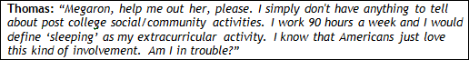
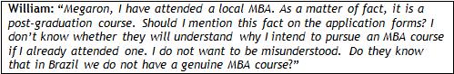
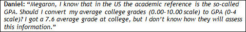
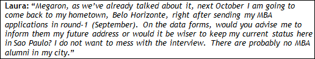
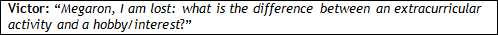

But what should I know about Data Forms?


Data Forms are a complement to what you could not insert in your essays and enable you, for example, to list outside activities in depth; explain a bad semester in college, share the significance of a received award, etc. The Data Form is most probably the first document that the Admission Committee members will review, so put your best foot forward and make a good first impression.

It seems it would require huge work.
It is a test of patience and ability to collect and organize key information about you. Yes, it is certainly not the most interesting use of your time.
What about the résumé?
Your Data Form is good material to craft an impressive résumé. If the information provided is rich and complete, you can synthesize it later into your one-page résumé. We will talk about résumés later on.
Do I need to be a good salesman in filling out my Data Form?
Your application is an exercise of marketing and the schools appreciate applicants who know how to present themselves.
Ok.
Remember: there should be no contradictions among your résumé, essays, and application form. Because schools employ firms such as Kroll to do a background check on those they admit, you should disclose anything that has a high likelihood of being discovered as part of a standard background check. In other words, please, do not hide information and do not lie.
Ok. But how does the Data Form work? I mean…online.
Some schools offer their own system while others use a specific program, e.g. applyyourself. In either case, the application form must be completed online and this job does not have to be done in one sitting; you may access your application and change your answers as much as you like before you submit it. You will only submit your document electronically once you have answered all required questions.
We are tempted to set aside this job, huh?
The vast majority of applicants will leave this job for the last minute (end of September), after they are done with essays and recommendation letters. This is a wrong move. Anticipate your tasks now, mainly those under your control. The data form is definitely among them.
Any more tips to answer this apparently endless form?
Go to Action Plan Km 7. There you'll find hints on how to do the job.
And what is the catch about filling in this report?
This framework will ease your job of filling out the online form required by each B-school. Our document comprises organized information requested by most business schools. Thus, by having one complete document, you can save time and energy, since all you will have to do is to open your document and copy and paste (and sometimes adapt) the information into the online application form of each school.
Ok, Megaron, that’s it? Now I am supposed to go to Action Plan and do my homework?
Sure…you can…oh, gosh, I was almost forgetting. Let’s check the doubts our Heroes had last year. Most probably their doubts are on your mind, or should be.
It’s true.

Stick to the truth. Be honest. Remember: (i.) Some applicants work 90 hours per week and still find time for extracurricular activities. Do not blame the situation on lack of time: you will be depreciating yourself; (ii.) Some applicants are accepted to Stanford and HBS and nevertheless have left these spaces totally blank. To some candidacies, the factor social/volunteer activity is almost irrelevant. And in yours? (Read Km -5 – Lack of Leadership).

Before anything, it’s important to understand that: (i.) International MBA schools know the fact that Brazilian schools sell their post-graduation programs as 'MBA'. Their awareness of this fact makes the problem smaller (that is, you should not be concerned);
(ii.) International MBA schools know that there are not MBA programs (full time, international students, etc.) in Brazil; (iii.) Each applicant should reinforce that the course he or she attended is merely a graduation program; (iv.) Most of the times, saying that you attended a Brazilian MBA does not raise your chance of admission. “OK, now that I have understood (i + ii + iii + iv), what should I do?” (01.) Try to ask your school whether it is possible to issue the documents and omit the MBA acronym. Some students succeeded in doing so; (02.) If you did not manage to get (i.) done? You will explain this issue in the 'optional essay' (details later on) or in the specific room 'additional Information' (most schools reserve such room in their data form).

Except for Columbia (CBS), schools do not ask you for any kind of conversion. For CBS, simply do not convert and say that it does not make sense to do so.

Keep in mind that when they issue invitations to interviews, some schools will check where you live so that they can find an alumnus/alumna nearby. If possible, keep an address in the city of Sao Paulo. Recommendation for those who are neither in Rio nor in SP: use an address in either city; take a trip to interview with alumni. Otherwise, you will end up taking the risk of (i.) interviewing by phone; (ii.) interviewing on campus (USA); (iii.) having to waive your interview. Do not forget: let AdCom know about the changes before you get acceptance. Inform the move after you are admitted.

While some extracurricular activities might classify as hobbies, the key difference is that extracurricular activities should be part of an organization.
Cool.
Nicholas, it’s time to fill in your Data Form.
And will I be able to copy and paste when the time comes to fill out the schools’ official data forms?
Yes, the forms are very similar. Thus, by having one complete document, you can save time and energy, since all you will have to do is to open your document and copy and paste (and sometimes adapt) the information into the online application form of each school. Nicholas, on the Action Plan Km 7, there are a lot of hints/tips on how to filling in the data form gaps.
I will do it right now, otherwise, I know myself, I will end up doing it later on, in the last minute.
Keep Running. And try to enjoy the ride.